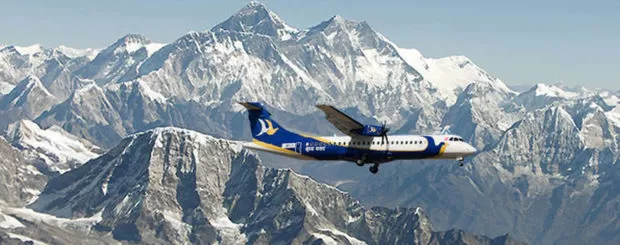
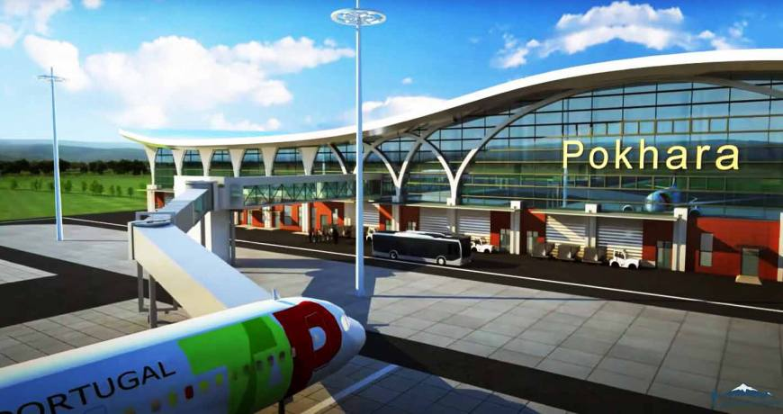
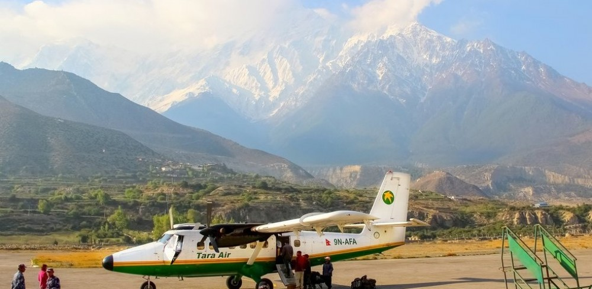
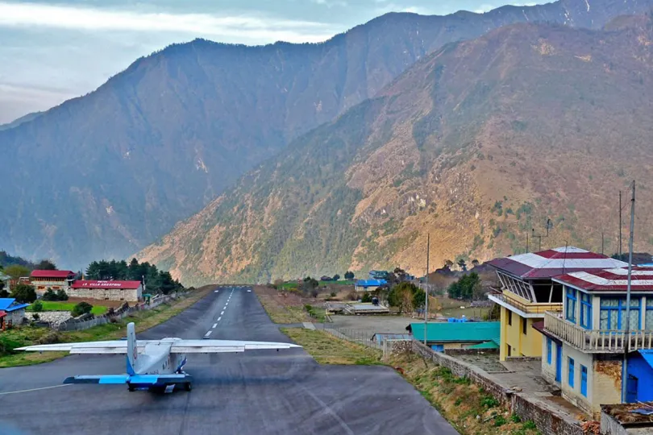

Flight

Nepal has a rich aviation history that blends breathtaking landscapes with remarkable flight experiences. The country is home to Tribhuvan International Airport (TIA) in Kathmandu, the main hub for international and domestic flights. Several airlines, including Nepal Airlines, Buddha Air, and Yeti Airlines, offer services across different regions, making travel convenient for both tourists and locals. Due to Nepal's mountainous terrain, flights often provide stunning aerial views of the Himalayas, giving travelers a unique opportunity to witness snow-capped peaks from above. Domestic flights are especially vital, as they connect remote locations like Lukla, Pokhara, and Jomsom, enabling trekkers to reach their starting points efficiently.
Jomsom Airline
 Beyond commercial flights, Nepal offers adventurous aerial experiences such as paragliding in Pokhara, ultra-light flights over the Annapurna range, and helicopter tours to Everest Base Camp. These activities add to Nepal's reputation as a top destination for aerial exploration. The aviation industry continues to expand, modernizing airports and improving safety measures to accommodate the growing number of travelers. With plans for Gautam Buddha International Airport in Bhairahawa and Pokhara International Airport, Nepal aims to enhance accessibility and boost tourism.Nepal aims to enhance accessibility and boost tourism. Whether soaring over the Himalayas or navigating the skies to reach hidden gems, flying in Nepal is not just a means of transportation—it's a gateway to unforgettable journeys.
Beyond commercial flights, Nepal offers adventurous aerial experiences such as paragliding in Pokhara, ultra-light flights over the Annapurna range, and helicopter tours to Everest Base Camp. These activities add to Nepal's reputation as a top destination for aerial exploration. The aviation industry continues to expand, modernizing airports and improving safety measures to accommodate the growing number of travelers. With plans for Gautam Buddha International Airport in Bhairahawa and Pokhara International Airport, Nepal aims to enhance accessibility and boost tourism.Nepal aims to enhance accessibility and boost tourism. Whether soaring over the Himalayas or navigating the skies to reach hidden gems, flying in Nepal is not just a means of transportation—it's a gateway to unforgettable journeys.
Talcha Airlines
 Nepal has a range of flight options, both domestic and international, connecting travelers to stunning destinations. Tribhuvan International Airport (TIA) in Kathmandu serves as the primary hub for international flights, with airlines like Nepal Airlines offering routes to cities worldwide. For domestic travel, airlines such as Buddha Air, Yeti Airlines, and Shree Airlines provide flights to popular locations like Pokhara, Lukla, and Bharatpur, making it easier to access Nepal’s breathtaking landscapes.Whether soaring over the Himalayas or navigating the skies to reach hidden gems, flying in Nepal is not just a means of transportation—it's a gateway to unforgettable journeys.
Nepal has a range of flight options, both domestic and international, connecting travelers to stunning destinations. Tribhuvan International Airport (TIA) in Kathmandu serves as the primary hub for international flights, with airlines like Nepal Airlines offering routes to cities worldwide. For domestic travel, airlines such as Buddha Air, Yeti Airlines, and Shree Airlines provide flights to popular locations like Pokhara, Lukla, and Bharatpur, making it easier to access Nepal’s breathtaking landscapes.Whether soaring over the Himalayas or navigating the skies to reach hidden gems, flying in Nepal is not just a means of transportation—it's a gateway to unforgettable journeys.
Kathmandu Airline



Pokhara Airport Talcha Airport Jomsom Airport Lukla Airport